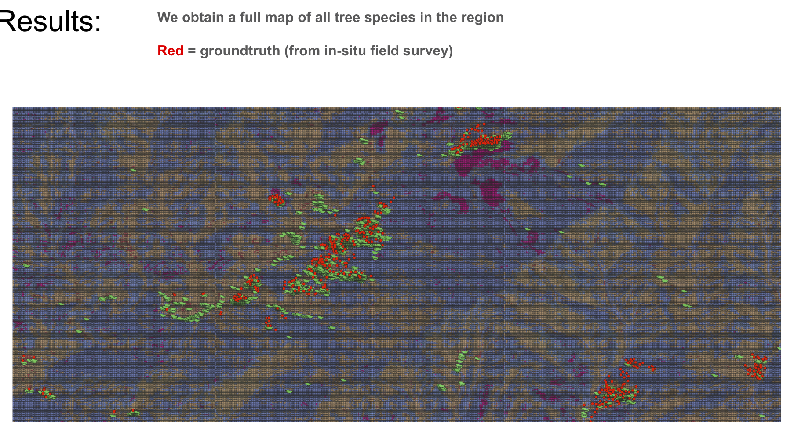
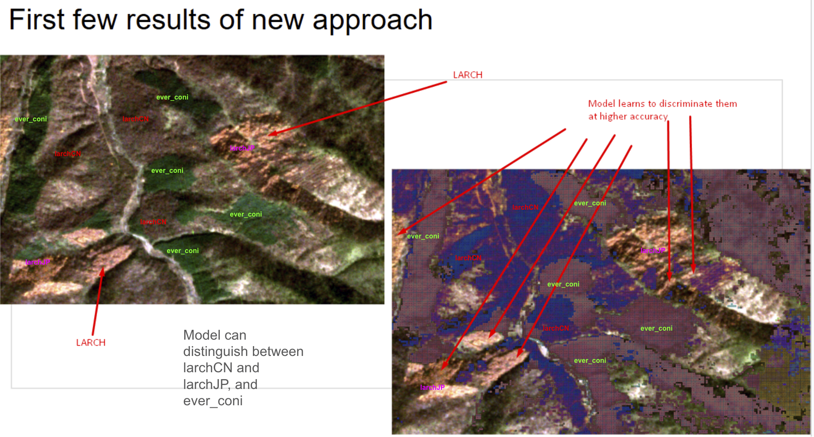
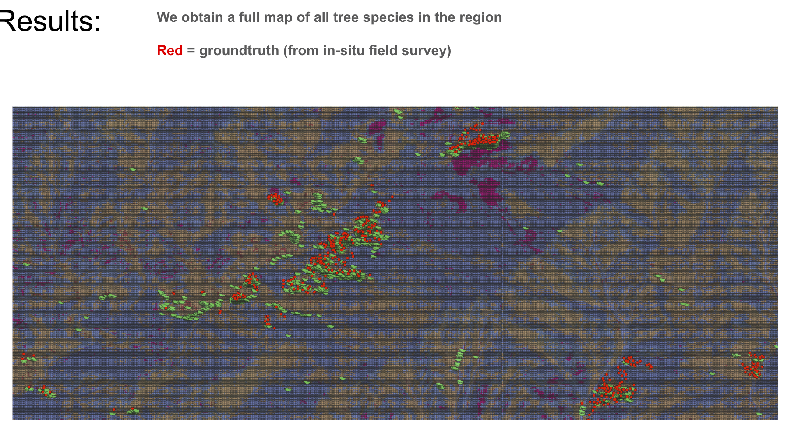
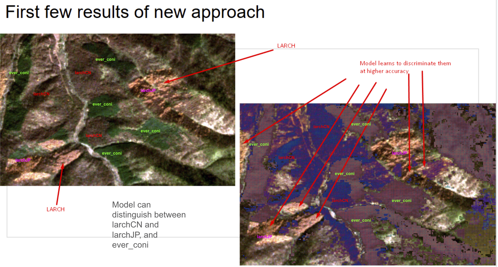

Dual LSTM Pipelines for Multi-Temporal Larch Plantation Mapping
Developed both supervised and self-supervised LSTM approaches to classify larch plantations and other forest types in the mountainous Changqing region. This dual pipeline leverages 12 months of Sentinel-2 imagery, encompassing spectral bands and key vegetation indices (NDVI, EVI, NDWI). A supervised branch (bidirectional LSTM) achieved ~94.45% classification accuracy in well-sampled areas, distinguishing Larix kaempferi (Japanese larch) and Larix gmelinii var. principis-rupprechtii (Chinese larch) based on their distinct phenological cues. The parallel self-supervised autoencoder pipeline discovered additional subtle clusters—highlighting important landscape heterogeneity that extends beyond direct groundtruth data.
This project demonstrates how time-series deep learning methods can overcome challenging data-scarce mountainous terrain, providing actionable insights for biodiversity conservation and sustainable forestry management.
Tracking Progress Towards Sustainable Development Goal 6 Using Satellite Imagery
In this work, we assessed water access and sanitation infrastructure (i.e., piped water systems and sewage networks) across African regions by combining Afrobarometer survey data with large-scale satellite imagery (Landsat 8 and Sentinel-2). Through a self-supervised vision transformer approach (DINO), the model inferred the presence of critical water infrastructure based on subtle spectral and spatial cues in cloud-free monthly composites. By integrating ~46,000+ interview responses from Round 7 and Round 8 of Afrobarometer, the pipeline achieved high classification accuracies (over 96% for piped water access, 97% for sewage system access).
This methodology can operate even in data-sparse conditions, using unlabeled satellite imagery to learn robust feature representations. It provides a scalable and cost-effective means to identify infrastructure coverage gaps, offering vital screening tools for policymakers aiming to meet SDG 6 (clean water & sanitation).

SWISLR – Saltwater Intrusion & Sea Level Rise in Rural Landscapes
This project addresses the growing threat of saltwater intrusion in the U.S. coastal plain, where sea-level rise, storms, and altered drainage networks drive salinity far inland. Our study synthesizes ecological, geospatial, and socioeconomic data to track how saline inundation reshapes farmland, timberlands, and freshwater wetlands. We documented major environmental repercussions—forest dieback, lost crop yields, and diminishing drinking water resources—as well as impacts on rural communities historically reliant on these coastal landscapes.
By linking large geospatial datasets (e.g., ArcGIS-based hazard maps) with field surveys and NSF-funded (DISES) research, we highlight hot spots of risk and identify local adaptation strategies, such as selective drainage management or transitions to salt-tolerant crops. Ultimately, the SWISLR project underscores the urgency of integrated planning to preserve coastal livelihoods and ecosystems.
 


